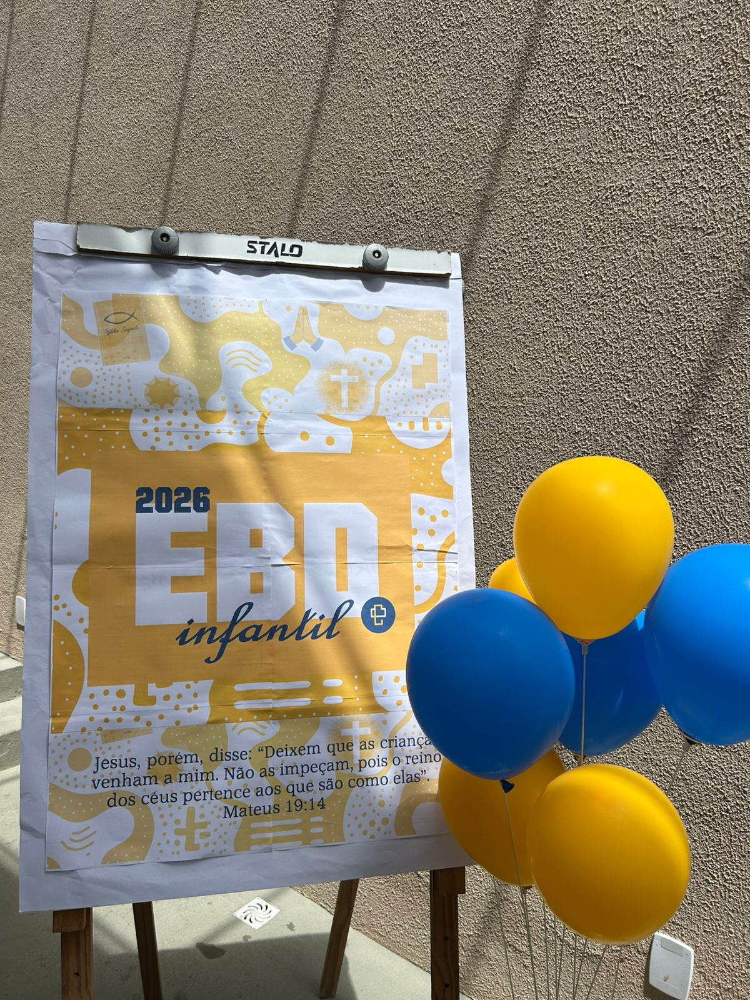
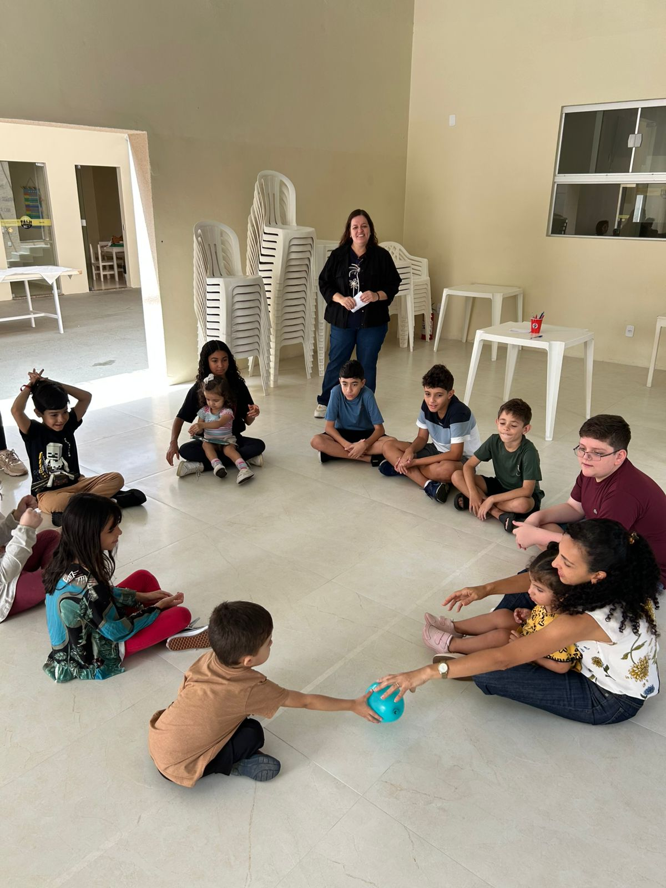

Todas as Notícias
Escola Bíblica Dominical está de volta! 🙏
No dia 25 de janeiro, a IECCP celebrou com alegria o retorno da nossa Escola Bíblica Dominical. Foi um domingo de reencontros marcantes e muito aprendizado para todas as idades.
- Adultos e Adolescentes: Estudo do livro “O Evangelho para a Vida Real”.
- Ministério Infantil: Brincadeiras, recepção e ensino bíblico de forma lúdica.
A EBD é o coração do ensino em nossa igreja. Se você não pôde estar conosco, sinta-se convidado para as próximas aulas.

